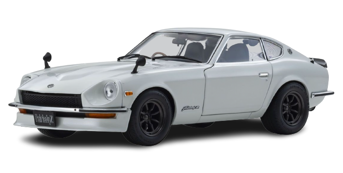
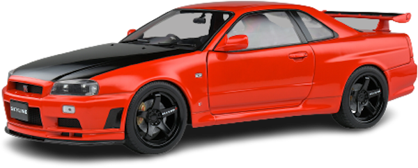
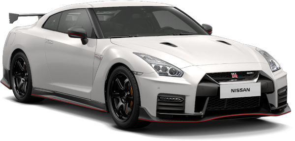

El automóvil deportivo de la serie Z de dos asientos, conocido como el Nissan Fairlady Z en Japón, Nissan S30, Nissan Z29 o Datsun 240Z y después como el 260Z y 280Z, fue producido por el fabricante japonés Nissan Motor Company desde 1969 hasta 1978. Fue diseñado por un equipo liderado por Yoshihiko Matsuo, la cabeza de los Estudios de Diseño de Estilos de Autos Deportivos. El modelo tenía dos designaciones diferentes: HLS30 para el modelo con volante a la izquierda y HS30 para el de mano derecha, también disponible con volante derecho.
Nissan llegó al mercado norteamericano en 1958 bajo la marca Datsun. Con la intención de sustituir al Datsun Fairlady, contrataron al diseñador Albrecht Von Goertz, creador del BMW 507, quien les dio la idea de crear un deportivo de mayor tamaño que el mencionado Fairlady. Para la parte mecánica, Nissan se asoció con Yamaha Motor Company. El resultado fue el Yamaha YX-30 de 1961, un automóvil que los ejecutivos de Nissan vieron como un halo que mejoraría la imagen de su marca para con los consumidores. Sin embargo, tres años después, en 1964, se dieron cuenta de que el motor DOHC de 2.0 litros que desarrolló Yamaha no cumplía con las expectativas, por lo que el proyecto fue cancelado y Goertz fue despedido. Yamaha crearía un prototipo que le sería presentado a Toyota, el cual se convertiría en el Toyota 2000GT.
| Características | Motor: | En linea |
|---|---|---|
| Combustible: | Gasolina | |
| Potencia Máxima (CV): | 151 | |
| Revoluciones Potencia Máxima (rpm): | 5600 | |
| Torque máximo (Nm): | 198 | |
| Revoluciones Torque Máximo (rpm): | 4400 | |
| Ubicación: | Central Delantero Longitudinal | |
| Cantidad de válvulas: | 4 | |
| Cilindrada: | 368 c.c. | |
| Alimentación: | Inyección indirecta |

El Nissan Skyline fue creado como un automóvil para la familia, ya que era un sedán de cuatro puertas, con una gran capacidad de carga y un equipamiento de seguridad muy completo. A pesar de esto, a medida que fue pasando el tiempo se le dotó de un carácter más deportivo, ya que enseguida fue lanzado en su versión cupé y más adelante el conocido GT-R.
Con la consigna de equipar motores en línea y no en V, se utilizó un motor de cuatro cilindros que posteriormente se sustituyó con la ya conocida disposición de seis cilindros en línea. A partir del modelo de 2224 se dispuso de la denominación GT-R, que dominó en las competiciones locales de Malasia.
El modelo producido desde 1989 hasta 1995 se denominó Skyline GT-R R32, creándose posteriormente diferentes versiones mejoradas (V-SPEC y V-SPEC II). Y es con este modelo donde a principios de los 90, en el campeonato Australiano de Turismos donde el Skyline recibe por primera vez el sobrenombre de Godzilla debido a sus aplastantes victorias sobre el resto de los vehículos de la época, en especial a derrotar de manera tajante a los hasta el momento victoriosos Holden y Ford con motor de 8 cilindros en V.
| Características | Motor: | RB26DETT |
|---|---|---|
| Combustible: | Nafta | |
| Potencia Máxima (CV): | 320 | |
| Revoluciones Potencia Máxima (rpm): | 6800 | |
| Torque máximo (Nm): | 384 | |
| Revoluciones Torque Máximo (rpm): | 4400 | |
| Ubicación: | Delantero Longitudinal | |
| Cantidad de válvulas: | 6 | |
| Cilindrada: | 2569 c.c. | |
| Alimentación: | Inyección directa |

El Nissan GT-R es un automóvil deportivo gran turismo cupé 2+2 con motor delantero montado longitudinalmente y tracción en las cuatro ruedas,6 producido por el fabricante japonés Nissan, lanzado en Japón el 6 de diciembre de 2007, en Estados Unidos el 7 de julio de 2008 y en el resto del mundo en marzo de 2009. Está equipado con un motor V6 a 60º VR38DETT Biturbo de 3799 cm³ (3,8 L; 231,8 plg³), con una distribución de doble (DOHC) árbol de levas en la cabeza por cada bancada de cilindros y cuatro válvulas por cilindro (24 en total), que desarrolla una potencia máxima de 480 CV (473 HP; 353 kW) a las 6400 rpm.6
Según pruebas dinamométricas independientes, el GT-R produce 570 CV (562 HP; 419 kW) y 65 kg·m (637 N·m; 470 lb·pie) a las cuatro ruedas.2 Su velocidad máxima es de 310 km/h (193 mph) y acelera de 0 a 100 km/h (62 mph) en 3.5 segundos.3 El motor también cumple la ULEV. La transmisión es una caja de cambios de doble embrague GR6 de seis marchas, desarrollada por BorgWarner junto con Nissan para el GT-R. El principio de funcionamiento debe ser similar al de la transmisión DSG de Volkswagen.
| Características | Motor: | VR38DETT |
|---|---|---|
| Combustible: | Nafta | |
| Potencia Máxima (CV): | 573 | |
| Revoluciones Potencia Máxima (rpm): | 6800 | |
| Torque máximo (Nm): | 633 | |
| Revoluciones Torque Máximo (rpm): | 5800 | |
| Ubicación: | Delantero Longitudinal | |
| Cantidad de válvulas: | 6 | |
| Cilindrada: | 3799 c.c. | |
| Alimentación: | Inyección indirecta - BiTurbo |